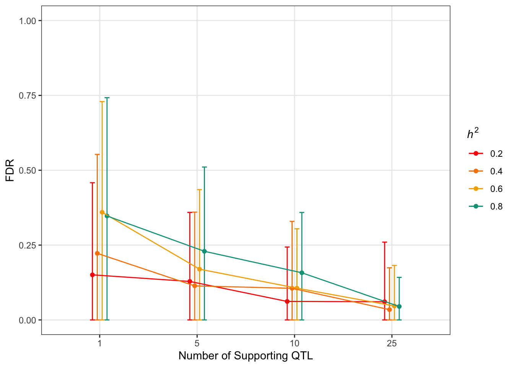
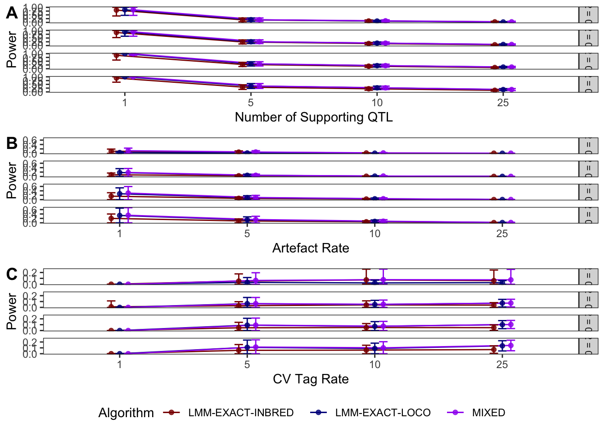
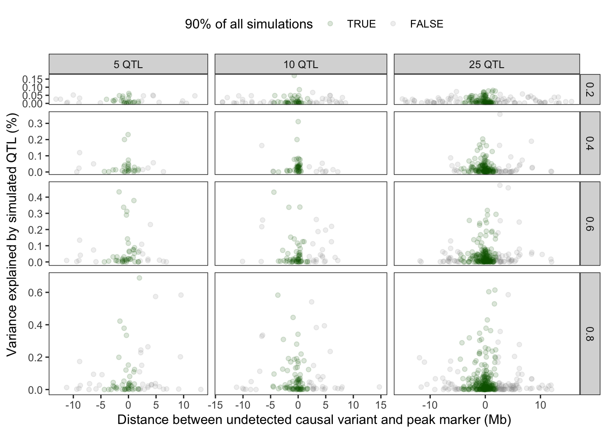
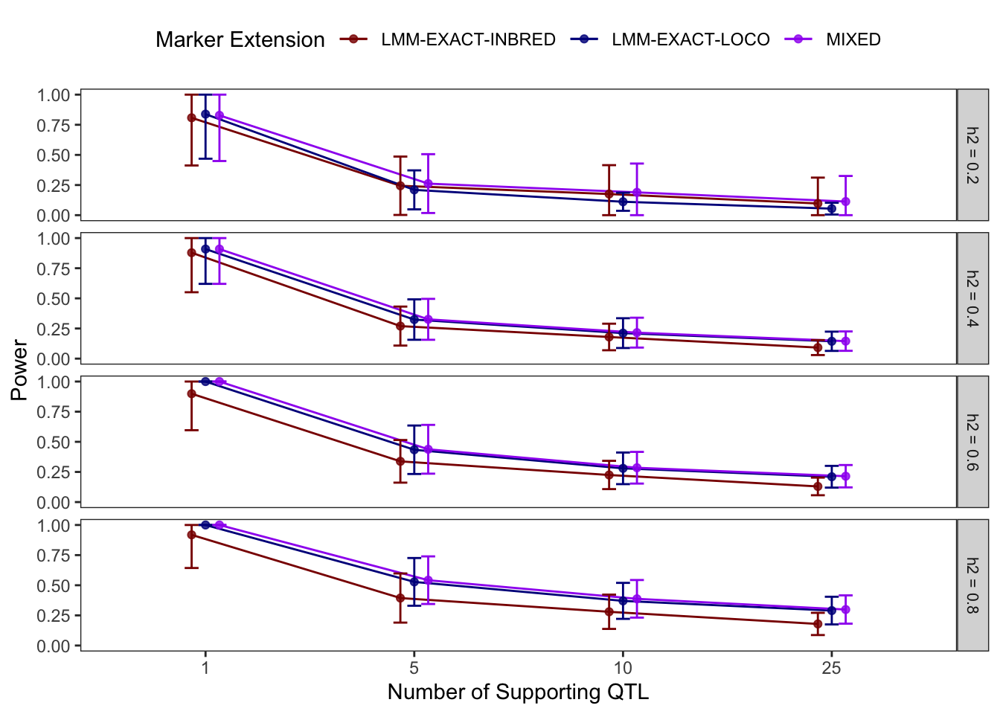
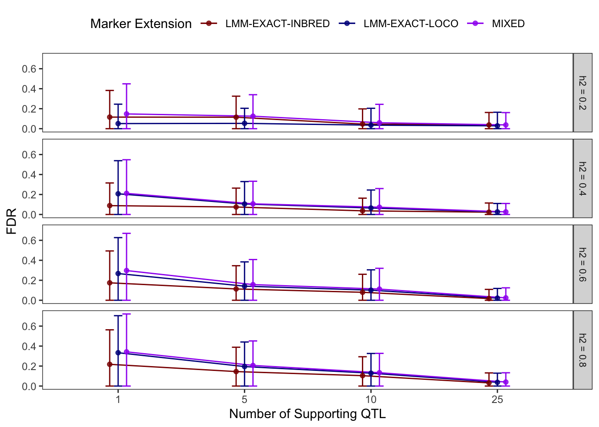

Polygenic Architectures are Difficult to Resolve Using GWAS
Last updated: 2021-02-01
Checks: 6 1
Knit directory: NemaScan_Performance/
This reproducible R Markdown analysis was created with workflowr (version 1.6.2). The Checks tab describes the reproducibility checks that were applied when the results were created. The Past versions tab lists the development history.
Great! Since the R Markdown file has been committed to the Git repository, you know the exact version of the code that produced these results.
Great job! The global environment was empty. Objects defined in the global environment can affect the analysis in your R Markdown file in unknown ways. For reproduciblity it’s best to always run the code in an empty environment.
The command set.seed(20200825) was run prior to running the code in the R Markdown file. Setting a seed ensures that any results that rely on randomness, e.g. subsampling or permutations, are reproducible.
Great job! Recording the operating system, R version, and package versions is critical for reproducibility.
Nice! There were no cached chunks for this analysis, so you can be confident that you successfully produced the results during this run.
Using absolute paths to the files within your workflowr project makes it difficult for you and others to run your code on a different machine. Change the absolute path(s) below to the suggested relative path(s) to make your code more reproducible.
| absolute | relative |
|---|---|
| ~/Documents/projects/NemaScan_Performance/ | . |
Great! You are using Git for version control. Tracking code development and connecting the code version to the results is critical for reproducibility.
The results in this page were generated with repository version c1206c6. See the Past versions tab to see a history of the changes made to the R Markdown and HTML files.
Note that you need to be careful to ensure that all relevant files for the analysis have been committed to Git prior to generating the results (you can use wflow_publish or wflow_git_commit). workflowr only checks the R Markdown file, but you know if there are other scripts or data files that it depends on. Below is the status of the Git repository when the results were generated:
Ignored files:
Ignored: .DS_Store
Ignored: .Rhistory
Ignored: analysis/.DS_Store
Ignored: code/.DS_Store
Ignored: data/.DS_Store
Ignored: data/.Rhistory
Ignored: output/.DS_Store
Untracked files:
Untracked: analysis/genomic.landscape.Rmd
Untracked: code/2014_toxinphenotypes.R
Untracked: code/Aggregate_Mappings.R
Untracked: code/Find_Aggregate_Intervals.R
Untracked: code/Find_GCTA_Intervals.R
Untracked: code/pipeline.plotting.R
Untracked: code/startup.R
Untracked: code/susie.R
Untracked: data/Chr.1.ARM.divergent.regions.bed
Untracked: data/Chr.1.ARM.nondivergent.regions.bed
Untracked: data/Chr.1.CENTER.divergent.regions.bed
Untracked: data/Chr.1.CENTER.nondivergent.regions.bed
Untracked: data/Chr.2.ARM.divergent.regions.bed
Untracked: data/Chr.2.ARM.nondivergent.regions.bed
Untracked: data/Chr.2.CENTER.divergent.regions.bed
Untracked: data/Chr.2.CENTER.nondivergent.regions.bed
Untracked: data/Chr.3.ARM.divergent.regions.bed
Untracked: data/Chr.3.ARM.nondivergent.regions.bed
Untracked: data/Chr.3.CENTER.divergent.regions.bed
Untracked: data/Chr.3.CENTER.nondivergent.regions.bed
Untracked: data/Chr.4.ARM.divergent.regions.bed
Untracked: data/Chr.4.ARM.nondivergent.regions.bed
Untracked: data/Chr.4.CENTER.divergent.regions.bed
Untracked: data/Chr.4.CENTER.nondivergent.regions.bed
Untracked: data/Chr.5.ARM.divergent.regions.bed
Untracked: data/Chr.5.ARM.nondivergent.regions.bed
Untracked: data/Chr.5.CENTER.divergent.regions.bed
Untracked: data/Chr.5.CENTER.nondivergent.regions.bed
Untracked: data/Chr.6.ARM.divergent.regions.bed
Untracked: data/Chr.6.ARM.nondivergent.regions.bed
Untracked: data/Chr.6.CENTER.divergent.regions.bed
Untracked: data/Chr.6.CENTER.nondivergent.regions.bed
Untracked: data/NemaScan_Performance.Algorithm.Sims.20201024.RData
Untracked: data/NemaScan_Performance.Algorithm.Sims.20201110_EMMA.RData
Untracked: data/NemaScan_Performance.Algorithm.Sims.v.2.20201104.RData
Untracked: data/NemaScan_Performance.Architecture.20201120.RData
Untracked: data/NemaScan_Performance.Architecture.CI50.20201130.RData
Untracked: data/NemaScan_Performance.Architecture.CI50.group500.20201201.RData
Untracked: data/NemaScan_Performance.Architecture.Mixed.20201205.RData
Untracked: data/NemaScan_Performance.Architecture.Mixed.20201209.RData
Untracked: data/NemaScan_Performance.Architecture.Mixed.20201223.RData
Untracked: data/NemaScan_Performance.Architecture.Mixed.CI.50.20201224.RData
Untracked: data/NemaScan_Performance.Architecture.Mixed.CI50.group500.v2.20210131.RData
Untracked: data/NemaScan_Performance.Architecture.Mixed.CI50.v2.20210131.RData
Untracked: data/NemaScan_Performance.Architecture.Mixed.group500.20201223.RData
Untracked: data/NemaScan_Performance.Architecture.Mixed.group500.CI.50.20201224.RData
Untracked: data/NemaScan_Performance.Architecture.Mixed.group500.v2.20210131.RData
Untracked: data/NemaScan_Performance.Architecture.Mixed.v2.20210131.RData
Untracked: data/NemaScan_Performance.Architecture.group500.20201124.RData
Untracked: data/NemaScan_Performance.CeNDR2020_GAMMA_EMMA_hardfiltered.20201020.RData
Untracked: data/NemaScan_Performance.CeNDR2020_PowerPrecision.RData
Untracked: data/NemaScan_Performance.CeNDR2020_PowerPrecision_GAMMA.20200909.RData
Untracked: data/NemaScan_Performance.CeNDR2020_PowerPrecision_GAMMA.RData
Untracked: data/NemaScan_Performance.CeNDR2020_PowerPrecision_GAMMA_EMMA.20200924.RData
Untracked: data/NemaScan_Performance.CeNDR2020_PowerPrecision_REDO.20200909.RData
Untracked: data/NemaScan_Performance.CeNDR2020_cendr_sets.20200929.RData
Untracked: data/NemaScan_Performance.CeNDR2020_population_subsampling.20200925.RData
Untracked: data/NemaScan_Performance.CeNDR2020_population_subsampling.20201018.RData
Untracked: data/NemaScan_Performance.CeNDR2020_population_subsampling.20201019.RData
Untracked: data/NemaScan_Performance.Demography.SampleSize.Complete.Subsampled.20201230.RData
Untracked: data/NemaScan_Performance.Demography.SampleSize.Unswept.Subsampled.20210111.RData
Untracked: data/NemaScan_Performance.Genomic.Locations.Chr.1.ARM.divergent.20210126.RData
Untracked: data/NemaScan_Performance.Genomic.Locations.Chr.1.ARM.divergent.20210130.RData
Untracked: data/NemaScan_Performance.Genomic.Locations.Chr.1.ARM.nondivergent.20210129.RData
Untracked: data/NemaScan_Performance.Genomic.Locations.Chr.1.CENTER.divergent.20210129.RData
Untracked: data/NemaScan_Performance.Genomic.Locations.Chr.1.CENTER.nondivergent.20210129.RData
Untracked: data/NemaScan_Performance.Variant.Set.HF.chr125.20201112.RData
Untracked: data/NemaScan_Performance.Variant.Set.Hard.Filtered.20201111.RData
Untracked: data/NemaScan_Performance.Variant.Set.Imputed.20201111.RData
Untracked: data/NemaScan_Performance.Variant.Set.Imputed.NonDivergent.20201112.RData
Untracked: data/NemaScan_Performance.Variant.Set.Imputed.chr125.20201112.RData
Untracked: data/NemaScan_Performance.updated.MIPstrain.performance.20210119.RData
Untracked: data/NemaScan_Population_Metrics.Demography.SampleSize.Complete.Subsampled.20210111.RData
Untracked: data/NemaScan_Population_Metrics.Demography.SampleSize.Unswept.Subsampled.20210111.RData
Untracked: data/NemaScan_Strain_Summary.Demography.SampleSize.Complete.Subsampled.20210111.RData
Untracked: data/NemaScan_Strain_Summary.Demography.SampleSize.Unswept.Subsampled.20210111.RData
Untracked: data/TO_SIMS.bim
Untracked: data/all_susie_BF_hits.tsv
Untracked: data/all_susie_hits.tsv
Untracked: data/causal.variants.sim.100.txt
Untracked: data/causal.variants.sim.5.txt
Untracked: data/hard.filtered.snps.bim
Untracked: data/imputed.snps.bim
Untracked: output/10_1_0.6_0.05_gamma_fiscal.burro.manhattan.plot.png
Untracked: output/10_2_0.6_0.05_gamma_sublinear.cowrie.manhattan.plot.png
Untracked: output/2014_toxin_phenos.tsv
Untracked: output/5_1_0.8_CHRIII_5.12MB_effect.plot.png
Untracked: output/5_1_0.8_CHRII_4.44MB_effect.plot.png
Untracked: output/5_1_0.8_CHRV_5.44MB_effect.plot.png
Untracked: output/5_1_0.8_CHRX_1.83MB_effect.plot.png
Untracked: output/5_1_0.8_LD.plot.png
Untracked: output/5_1_0.8_manhattan.plot.png
Untracked: output/5_92_0.2_LD.plot.png
Untracked: output/complete.subsampled.strains.txt
Untracked: output/n.divergent.variants.in.variant.set.png
Untracked: output/perc.divergent.variants.in.variant.set.png
Untracked: output/pr.curve.variant.set.png
Untracked: output/prelim.fig.1.png
Untracked: output/prelim.fig.2.png
Untracked: output/prelim.fig.3.png
Untracked: output/prelim.supp.fig.A.png
Untracked: output/prelim.supp.fig.B.png
Untracked: output/subsampled.strains_20201225_n144_reps200.txt
Untracked: output/subsampled.strains_20201225_n192_reps200.txt
Untracked: output/subsampled.strains_20201225_n240_reps200.txt
Untracked: output/subsampled.strains_20201225_n288_reps200.txt
Untracked: output/subsampled.strains_20201225_n336_reps200.txt
Untracked: output/subsampled.strains_20201225_n384_reps200.txt
Untracked: output/subsampled.strains_20201225_n48_reps200.txt
Untracked: output/subsampled.strains_20201225_n96_reps200.txt
Untracked: output/subsampled.swept.strains_20201225_n120_reps200.txt
Untracked: output/subsampled.swept.strains_20201225_n144_reps200.txt
Untracked: output/subsampled.swept.strains_20201225_n168_reps200.txt
Untracked: output/subsampled.swept.strains_20201225_n24_reps200.txt
Untracked: output/subsampled.swept.strains_20201225_n48_reps200.txt
Untracked: output/subsampled.swept.strains_20201225_n72_reps200.txt
Untracked: output/subsampled.swept.strains_20201225_n96_reps200.txt
Untracked: output/subsampled.unswept.strains_20201225_n120_reps200.txt
Untracked: output/subsampled.unswept.strains_20201225_n144_reps200.txt
Untracked: output/subsampled.unswept.strains_20201225_n168_reps200.txt
Untracked: output/subsampled.unswept.strains_20201225_n192_reps200.txt
Untracked: output/subsampled.unswept.strains_20201225_n216_reps200.txt
Untracked: output/subsampled.unswept.strains_20201225_n24_reps200.txt
Untracked: output/subsampled.unswept.strains_20201225_n48_reps200.txt
Untracked: output/subsampled.unswept.strains_20201225_n72_reps200.txt
Untracked: output/subsampled.unswept.strains_20201225_n96_reps200.txt
Untracked: output/susie.validation.csv
Untracked: output/unswept.subsampled.strains.txt
Untracked: output/var.exp.comps.png
Unstaged changes:
Modified: analysis/population.comparison.Rmd
Modified: code/commonly.used.sim.locations.R
Modified: code/generate_strain_lists_swept.R
Modified: output/swept.by.chr.strain.lists.txt
Note that any generated files, e.g. HTML, png, CSS, etc., are not included in this status report because it is ok for generated content to have uncommitted changes.
These are the previous versions of the repository in which changes were made to the R Markdown (analysis/architecture.Rmd) and HTML (docs/architecture.html) files. If you’ve configured a remote Git repository (see ?wflow_git_remote), click on the hyperlinks in the table below to view the files as they were in that past version.
| File | Version | Author | Date | Message |
|---|---|---|---|---|
| Rmd | c1206c6 | Sam Widmayer | 2021-02-01 | update with correct var.exp in detected QTL |
| html | 81a1cf4 | Sam Widmayer | 2021-01-19 | Build site. |
| Rmd | cfd024e | Sam Widmayer | 2021-01-19 | update plots |
| html | 588afcb | Sam Widmayer | 2021-01-05 | Build site. |
| Rmd | 2956df6 | Sam Widmayer | 2021-01-05 | percent diff for grouping, extension |
| html | d2833ef | Sam Widmayer | 2021-01-05 | Build site. |
| Rmd | dd4da2f | Sam Widmayer | 2021-01-05 | fix group size tables |
| html | d1dc9d8 | Sam Widmayer | 2021-01-04 | Build site. |
| Rmd | abcb1dd | Sam Widmayer | 2021-01-04 | reintegrate tables for grouping and CI |
| html | 8688742 | Sam Widmayer | 2021-01-04 | Build site. |
| Rmd | 66d05e5 | Sam Widmayer | 2021-01-04 | fix fig2A jitter |
| Rmd | 38e8395 | Sam Widmayer | 2021-01-04 | wflow_git_commit(files = “analysis/architecture.Rmd”) |
| html | 842ad5b | Sam Widmayer | 2021-01-04 | Build site. |
| Rmd | b4ff99d | Sam Widmayer | 2021-01-04 | sd for FDR and power |
| html | 4370685 | Sam | 2020-12-26 | Build site. |
| Rmd | 7c6f126 | Sam | 2020-12-26 | simplify plots |
| html | 777ef17 | Sam | 2020-12-26 | Build site. |
| Rmd | 2bf68e3 | Sam | 2020-12-26 | wflow_publish(“analysis/architecture.Rmd”) |
| html | 2423b37 | Sam | 2020-12-26 | Build site. |
| Rmd | ed561fc | Sam | 2020-12-26 | adjust pr curve for main result |
| Rmd | a0cbc46 | Sam | 2020-12-26 | adjust pr curve for main result |
| html | 03660cc | Sam | 2020-12-26 | Build site. |
| Rmd | 8a6a1eb | Sam | 2020-12-26 | comment out supplementary tables |
| Rmd | 5ad9235 | Sam | 2020-12-26 | update with new aggregated runs, group sizes, and CIs |
| Rmd | 77ecc62 | Sam Widmayer | 2020-12-18 | xmas push |
| html | f596112 | Sam Widmayer | 2020-12-02 | Build site. |
| Rmd | de6baed | Sam Widmayer | 2020-12-02 | add FPR evaluation for CIs and groupings |
| html | c69064b | Sam Widmayer | 2020-12-01 | Build site. |
| Rmd | 68829fe | Sam Widmayer | 2020-12-01 | integrate multiple CI and grouping params |
| Rmd | c39b201 | Sam Widmayer | 2020-12-01 | integrate multiple CI and grouping params |
| Rmd | f24b929 | Sam | 2020-11-30 | turkey day changes |
| html | fcfac6a | Sam | 2020-11-24 | Build site. |
| Rmd | 385b5cb | Sam | 2020-11-24 | prelim figures |
| html | a07596f | Sam | 2020-11-24 | Build site. |
| Rmd | b6ccbbf | Sam | 2020-11-24 | silence summarise stuff |
| Rmd | 9114b11 | Sam | 2020-11-24 | update title |
| html | d4f1563 | Sam | 2020-11-24 | Build site. |
| Rmd | 30ce6a2 | Sam | 2020-11-24 | update plots |
Analysis date: February 01, 2021
NemaScan simulation performance was assessed with the following experimental parameters:
Number of Simulated QTL:
1, 5, 10, 25Sample Population(s):
completeHeritability(ies):
0.2, 0.4, 0.6, 0.8MAF(s):
0.05Number of Replicates per Regime:
100QTL Effect Range:
gamma


# A tibble: 16 x 4
# Groups: nQTL, h2 [16]
nQTL h2 beavis good
<fct> <fct> <int> <int>
1 1 0.2 54 28
2 1 0.4 55 35
3 1 0.6 59 40
4 1 0.8 55 43
5 5 0.2 105 26
6 5 0.4 116 47
7 5 0.6 161 58
8 5 0.8 189 82
9 10 0.2 157 32
10 10 0.4 144 71
11 10 0.6 194 90
12 10 0.8 261 125
13 25 0.2 257 25
14 25 0.4 303 58
15 25 0.6 428 106
16 25 0.8 568 176
| Version | Author | Date |
|---|---|---|
| 842ad5b | Sam Widmayer | 2021-01-04 |
Joining, by = c("h2", "algorithm", "nQTL", "group.size", "CI", ".metric", ".estimator", ".estimate")
Joining, by = c("h2", "algorithm", "nQTL", "group.size", "CI", ".metric", ".estimator", ".estimate")Joining, by = c("h2", "algorithm", "nQTL", "group.size", "CI")



| Version | Author | Date |
|---|---|---|
| 81a1cf4 | Sam Widmayer | 2021-01-19 |

| Version | Author | Date |
|---|---|---|
| 81a1cf4 | Sam Widmayer | 2021-01-19 |

| Version | Author | Date |
|---|---|---|
| 81a1cf4 | Sam Widmayer | 2021-01-19 |

| Version | Author | Date |
|---|---|---|
| 81a1cf4 | Sam Widmayer | 2021-01-19 |
TABLES
[1] "POWER EVALUATION"[1] "Group Size: 500"
[1] "CI Extension: 50"
# A tibble: 16 x 5
h2 nQTL `LMM-EXACT-INBRED` `LMM-EXACT-LOCO` MIXED
<fct> <fct> <dbl> <dbl> <dbl>
1 0.2 1 0.808 0.838 0.828
2 0.2 5 0.224 0.2 0.24
3 0.2 10 0.167 0.103 0.178
4 0.2 25 0.0871 0.0442 0.0988
5 0.4 1 0.869 0.909 0.909
6 0.4 5 0.258 0.306 0.308
7 0.4 10 0.168 0.198 0.200
8 0.4 25 0.0735 0.119 0.120
9 0.6 1 0.899 1 1
10 0.6 5 0.324 0.406 0.41
11 0.6 10 0.202 0.264 0.267
12 0.6 25 0.110 0.184 0.187
13 0.8 1 0.918 1 1
14 0.8 5 0.364 0.502 0.506
15 0.8 10 0.255 0.348 0.356
16 0.8 25 0.151 0.257 0.259
[1] "Group Size: 500"
[1] "CI Extension: 150"
# A tibble: 16 x 5
h2 nQTL `LMM-EXACT-INBRED` `LMM-EXACT-LOCO` MIXED
<fct> <fct> <dbl> <dbl> <dbl>
1 0.2 1 0.808 0.838 0.828
2 0.2 5 0.238 0.21 0.258
3 0.2 10 0.173 0.111 0.187
4 0.2 25 0.0955 0.0534 0.111
5 0.4 1 0.879 0.909 0.909
6 0.4 5 0.268 0.322 0.324
7 0.4 10 0.179 0.211 0.215
8 0.4 25 0.0899 0.137 0.138
9 0.6 1 0.899 1 1
10 0.6 5 0.336 0.43 0.434
11 0.6 10 0.224 0.276 0.281
12 0.6 25 0.128 0.207 0.211
13 0.8 1 0.918 1 1
14 0.8 5 0.384 0.518 0.53
15 0.8 10 0.276 0.364 0.380
16 0.8 25 0.175 0.285 0.291
[1] "Group Size: 1000"
[1] "CI Extension: 50"
# A tibble: 16 x 5
h2 nQTL `LMM-EXACT-INBRED` `LMM-EXACT-LOCO` MIXED
<fct> <fct> <dbl> <dbl> <dbl>
1 0.2 1 0.808 0.838 0.828
2 0.2 5 0.234 0.2 0.248
3 0.2 10 0.170 0.104 0.182
4 0.2 25 0.0899 0.0450 0.102
5 0.4 1 0.869 0.909 0.909
6 0.4 5 0.26 0.31 0.312
7 0.4 10 0.170 0.202 0.204
8 0.4 25 0.0767 0.126 0.127
9 0.6 1 0.899 1 1
10 0.6 5 0.326 0.412 0.416
11 0.6 10 0.207 0.273 0.276
12 0.6 25 0.113 0.189 0.192
13 0.8 1 0.918 1 1
14 0.8 5 0.374 0.516 0.522
15 0.8 10 0.262 0.357 0.366
16 0.8 25 0.156 0.263 0.268
[1] "Group Size: 1000"
[1] "CI Extension: 150"
# A tibble: 16 x 5
h2 nQTL `LMM-EXACT-INBRED` `LMM-EXACT-LOCO` MIXED
<fct> <fct> <dbl> <dbl> <dbl>
1 0.2 1 0.808 0.838 0.828
2 0.2 5 0.244 0.21 0.262
3 0.2 10 0.176 0.111 0.190
4 0.2 25 0.0971 0.0542 0.113
5 0.4 1 0.879 0.909 0.909
6 0.4 5 0.27 0.324 0.326
7 0.4 10 0.180 0.212 0.216
8 0.4 25 0.0915 0.144 0.145
9 0.6 1 0.899 1 1
10 0.6 5 0.338 0.434 0.438
11 0.6 10 0.225 0.280 0.285
12 0.6 25 0.130 0.210 0.214
13 0.8 1 0.918 1 1
14 0.8 5 0.394 0.528 0.542
15 0.8 10 0.280 0.370 0.388
16 0.8 25 0.179 0.290 0.299[1] "CI Extension: 50"
[1] "Algorithm: LMM-EXACT-INBRED"
# A tibble: 16 x 5
h2 nQTL `500` `1000` grouping.diff
<fct> <fct> <dbl> <dbl> <chr>
1 0.2 1 0.808 0.808 0%
2 0.4 1 0.869 0.869 0%
3 0.6 1 0.899 0.899 0%
4 0.8 1 0.918 0.918 0%
5 0.2 5 0.224 0.234 1%
6 0.4 5 0.258 0.26 0.2%
7 0.6 5 0.324 0.326 0.2%
8 0.8 5 0.364 0.374 1%
9 0.2 10 0.167 0.170 0.3%
10 0.4 10 0.168 0.170 0.2%
11 0.6 10 0.202 0.207 0.5%
12 0.8 10 0.255 0.262 0.7%
13 0.2 25 0.0871 0.0899 0.28%
14 0.4 25 0.0735 0.0767 0.32%
15 0.6 25 0.110 0.113 0.28%
16 0.8 25 0.151 0.156 0.56%
[1] "CI Extension: 150"
[1] "Algorithm: LMM-EXACT-INBRED"
# A tibble: 16 x 5
h2 nQTL `500` `1000` grouping.diff
<fct> <fct> <dbl> <dbl> <chr>
1 0.2 1 0.808 0.808 0%
2 0.4 1 0.879 0.879 0%
3 0.6 1 0.899 0.899 0%
4 0.8 1 0.918 0.918 0%
5 0.2 5 0.238 0.244 0.6%
6 0.4 5 0.268 0.27 0.2%
7 0.6 5 0.336 0.338 0.2%
8 0.8 5 0.384 0.394 1%
9 0.2 10 0.173 0.176 0.3%
10 0.4 10 0.179 0.180 0.1%
11 0.6 10 0.224 0.225 0.1%
12 0.8 10 0.276 0.280 0.4%
13 0.2 25 0.0955 0.0971 0.16%
14 0.4 25 0.0899 0.0915 0.16%
15 0.6 25 0.128 0.130 0.2%
16 0.8 25 0.175 0.179 0.44%
[1] "CI Extension: 50"
[1] "Algorithm: LMM-EXACT-LOCO"
# A tibble: 16 x 5
h2 nQTL `500` `1000` grouping.diff
<fct> <fct> <dbl> <dbl> <chr>
1 0.2 1 0.838 0.838 0%
2 0.4 1 0.909 0.909 0%
3 0.6 1 1 1 0%
4 0.8 1 1 1 0%
5 0.2 5 0.2 0.2 0%
6 0.4 5 0.306 0.31 0.4%
7 0.6 5 0.406 0.412 0.6%
8 0.8 5 0.502 0.516 1.4%
9 0.2 10 0.103 0.104 0.1%
10 0.4 10 0.198 0.202 0.4%
11 0.6 10 0.264 0.273 0.9%
12 0.8 10 0.348 0.357 0.9%
13 0.2 25 0.0442 0.0450 0.08%
14 0.4 25 0.119 0.126 0.72%
15 0.6 25 0.184 0.189 0.48%
16 0.8 25 0.257 0.263 0.68%
[1] "CI Extension: 150"
[1] "Algorithm: LMM-EXACT-LOCO"
# A tibble: 16 x 5
h2 nQTL `500` `1000` grouping.diff
<fct> <fct> <dbl> <dbl> <chr>
1 0.2 1 0.838 0.838 0%
2 0.4 1 0.909 0.909 0%
3 0.6 1 1 1 0%
4 0.8 1 1 1 0%
5 0.2 5 0.21 0.21 0%
6 0.4 5 0.322 0.324 0.2%
7 0.6 5 0.43 0.434 0.4%
8 0.8 5 0.518 0.528 1%
9 0.2 10 0.111 0.111 0%
10 0.4 10 0.211 0.212 0.1%
11 0.6 10 0.276 0.280 0.4%
12 0.8 10 0.364 0.370 0.6%
13 0.2 25 0.0534 0.0542 0.08%
14 0.4 25 0.137 0.144 0.64%
15 0.6 25 0.207 0.210 0.28%
16 0.8 25 0.285 0.290 0.52%
[1] "CI Extension: 50"
[1] "Algorithm: MIXED"
# A tibble: 16 x 5
h2 nQTL `500` `1000` grouping.diff
<fct> <fct> <dbl> <dbl> <chr>
1 0.2 1 0.828 0.828 0%
2 0.4 1 0.909 0.909 0%
3 0.6 1 1 1 0%
4 0.8 1 1 1 0%
5 0.2 5 0.24 0.248 0.8%
6 0.4 5 0.308 0.312 0.4%
7 0.6 5 0.41 0.416 0.6%
8 0.8 5 0.506 0.522 1.6%
9 0.2 10 0.178 0.182 0.4%
10 0.4 10 0.200 0.204 0.4%
11 0.6 10 0.267 0.276 0.9%
12 0.8 10 0.356 0.366 1%
13 0.2 25 0.0988 0.102 0.32%
14 0.4 25 0.120 0.127 0.72%
15 0.6 25 0.187 0.192 0.52%
16 0.8 25 0.259 0.268 0.96%
[1] "CI Extension: 150"
[1] "Algorithm: MIXED"
# A tibble: 16 x 5
h2 nQTL `500` `1000` grouping.diff
<fct> <fct> <dbl> <dbl> <chr>
1 0.2 1 0.828 0.828 0%
2 0.4 1 0.909 0.909 0%
3 0.6 1 1 1 0%
4 0.8 1 1 1 0%
5 0.2 5 0.258 0.262 0.4%
6 0.4 5 0.324 0.326 0.2%
7 0.6 5 0.434 0.438 0.4%
8 0.8 5 0.53 0.542 1.2%
9 0.2 10 0.187 0.190 0.3%
10 0.4 10 0.215 0.216 0.1%
11 0.6 10 0.281 0.285 0.4%
12 0.8 10 0.380 0.388 0.8%
13 0.2 25 0.111 0.113 0.2%
14 0.4 25 0.138 0.145 0.64%
15 0.6 25 0.211 0.214 0.32%
16 0.8 25 0.291 0.299 0.72% [1] "Group Size: 500"
[1] "Algorithm: LMM-EXACT-INBRED"
# A tibble: 16 x 5
h2 nQTL `50` `150` CI.diff
<fct> <fct> <dbl> <dbl> <chr>
1 0.2 1 0.808 0.808 0%
2 0.4 1 0.869 0.879 1.01%
3 0.6 1 0.899 0.899 0%
4 0.8 1 0.918 0.918 0%
5 0.2 5 0.224 0.238 1.4%
6 0.4 5 0.258 0.268 1%
7 0.6 5 0.324 0.336 1.2%
8 0.8 5 0.364 0.384 2%
9 0.2 10 0.167 0.173 0.6%
10 0.4 10 0.168 0.179 1.1%
11 0.6 10 0.202 0.224 2.21%
12 0.8 10 0.255 0.276 2.11%
13 0.2 25 0.0871 0.0955 0.84%
14 0.4 25 0.0735 0.0899 1.65%
15 0.6 25 0.110 0.128 1.73%
16 0.8 25 0.151 0.175 2.41%
[1] "Group Size: 1000"
[1] "Algorithm: LMM-EXACT-INBRED"
# A tibble: 16 x 5
h2 nQTL `50` `150` CI.diff
<fct> <fct> <dbl> <dbl> <chr>
1 0.2 1 0.808 0.808 0%
2 0.4 1 0.869 0.879 1.01%
3 0.6 1 0.899 0.899 0%
4 0.8 1 0.918 0.918 0%
5 0.2 5 0.234 0.244 1%
6 0.4 5 0.26 0.27 1%
7 0.6 5 0.326 0.338 1.2%
8 0.8 5 0.374 0.394 2%
9 0.2 10 0.170 0.176 0.6%
10 0.4 10 0.170 0.180 1%
11 0.6 10 0.207 0.225 1.81%
12 0.8 10 0.262 0.280 1.81%
13 0.2 25 0.0899 0.0971 0.72%
14 0.4 25 0.0767 0.0915 1.49%
15 0.6 25 0.113 0.130 1.65%
16 0.8 25 0.156 0.179 2.29%
[1] "Group Size: 500"
[1] "Algorithm: LMM-EXACT-LOCO"
# A tibble: 16 x 5
h2 nQTL `50` `150` CI.diff
<fct> <fct> <dbl> <dbl> <chr>
1 0.2 1 0.838 0.838 0%
2 0.4 1 0.909 0.909 0%
3 0.6 1 1 1 0%
4 0.8 1 1 1 0%
5 0.2 5 0.2 0.21 1%
6 0.4 5 0.306 0.322 1.6%
7 0.6 5 0.406 0.43 2.4%
8 0.8 5 0.502 0.518 1.6%
9 0.2 10 0.103 0.111 0.8%
10 0.4 10 0.198 0.211 1.31%
11 0.6 10 0.264 0.276 1.2%
12 0.8 10 0.348 0.364 1.61%
13 0.2 25 0.0442 0.0534 0.92%
14 0.4 25 0.119 0.137 1.81%
15 0.6 25 0.184 0.207 2.33%
16 0.8 25 0.257 0.285 2.81%
[1] "Group Size: 1000"
[1] "Algorithm: LMM-EXACT-LOCO"
# A tibble: 16 x 5
h2 nQTL `50` `150` CI.diff
<fct> <fct> <dbl> <dbl> <chr>
1 0.2 1 0.838 0.838 0%
2 0.4 1 0.909 0.909 0%
3 0.6 1 1 1 0%
4 0.8 1 1 1 0%
5 0.2 5 0.2 0.21 1%
6 0.4 5 0.31 0.324 1.4%
7 0.6 5 0.412 0.434 2.2%
8 0.8 5 0.516 0.528 1.2%
9 0.2 10 0.104 0.111 0.7%
10 0.4 10 0.202 0.212 1%
11 0.6 10 0.273 0.280 0.7%
12 0.8 10 0.357 0.370 1.31%
13 0.2 25 0.0450 0.0542 0.92%
14 0.4 25 0.126 0.144 1.73%
15 0.6 25 0.189 0.210 2.13%
16 0.8 25 0.263 0.290 2.65%
[1] "Group Size: 500"
[1] "Algorithm: MIXED"
# A tibble: 16 x 5
h2 nQTL `50` `150` CI.diff
<fct> <fct> <dbl> <dbl> <chr>
1 0.2 1 0.828 0.828 0%
2 0.4 1 0.909 0.909 0%
3 0.6 1 1 1 0%
4 0.8 1 1 1 0%
5 0.2 5 0.24 0.258 1.8%
6 0.4 5 0.308 0.324 1.6%
7 0.6 5 0.41 0.434 2.4%
8 0.8 5 0.506 0.53 2.4%
9 0.2 10 0.178 0.187 0.9%
10 0.4 10 0.200 0.215 1.51%
11 0.6 10 0.267 0.281 1.41%
12 0.8 10 0.356 0.380 2.31%
13 0.2 25 0.0988 0.111 1.24%
14 0.4 25 0.120 0.138 1.89%
15 0.6 25 0.187 0.211 2.41%
16 0.8 25 0.259 0.291 3.29%
[1] "Group Size: 1000"
[1] "Algorithm: MIXED"
# A tibble: 16 x 5
h2 nQTL `50` `150` CI.diff
<fct> <fct> <dbl> <dbl> <chr>
1 0.2 1 0.828 0.828 0%
2 0.4 1 0.909 0.909 0%
3 0.6 1 1 1 0%
4 0.8 1 1 1 0%
5 0.2 5 0.248 0.262 1.4%
6 0.4 5 0.312 0.326 1.4%
7 0.6 5 0.416 0.438 2.2%
8 0.8 5 0.522 0.542 2%
9 0.2 10 0.182 0.190 0.8%
10 0.4 10 0.204 0.216 1.2%
11 0.6 10 0.276 0.285 0.9%
12 0.8 10 0.366 0.388 2.11%
13 0.2 25 0.102 0.113 1.12%
14 0.4 25 0.127 0.145 1.81%
15 0.6 25 0.192 0.214 2.21%
16 0.8 25 0.268 0.299 3.05% [1] "FDR EVALUATION"[1] "Group Size: 500"
[1] "CI Extension: 50"
# A tibble: 16 x 5
h2 nQTL `LMM-EXACT-INBRED` `LMM-EXACT-LOCO` MIXED
<fct> <fct> <dbl> <dbl> <dbl>
1 0.2 1 0.370 0.117 0.401
2 0.2 5 0.367 0.107 0.362
3 0.2 10 0.131 0.104 0.153
4 0.2 25 0.0882 0.0984 0.102
5 0.4 1 0.259 0.458 0.474
6 0.4 5 0.204 0.271 0.274
7 0.4 10 0.0874 0.147 0.164
8 0.4 25 0.0804 0.0945 0.0942
9 0.6 1 0.522 0.637 0.666
10 0.6 5 0.299 0.364 0.379
11 0.6 10 0.193 0.201 0.218
12 0.6 25 0.0646 0.0653 0.0717
13 0.8 1 0.628 0.703 0.729
14 0.8 5 0.413 0.426 0.456
15 0.8 10 0.282 0.286 0.319
16 0.8 25 0.101 0.0766 0.0968
[1] "Group Size: 500"
[1] "CI Extension: 150"
# A tibble: 16 x 5
h2 nQTL `LMM-EXACT-INBRED` `LMM-EXACT-LOCO` MIXED
<fct> <fct> <dbl> <dbl> <dbl>
1 0.2 1 0.370 0.117 0.401
2 0.2 5 0.339 0.0948 0.332
3 0.2 10 0.113 0.0750 0.131
4 0.2 25 0.0703 0.0567 0.0705
5 0.4 1 0.25 0.458 0.474
6 0.4 5 0.188 0.255 0.257
7 0.4 10 0.0729 0.125 0.137
8 0.4 25 0.0468 0.0630 0.0625
9 0.6 1 0.522 0.637 0.666
10 0.6 5 0.285 0.336 0.352
11 0.6 10 0.155 0.186 0.198
12 0.6 25 0.0479 0.0462 0.0488
13 0.8 1 0.628 0.703 0.729
14 0.8 5 0.385 0.409 0.431
15 0.8 10 0.251 0.265 0.291
16 0.8 25 0.0705 0.0646 0.0752
[1] "Group Size: 1000"
[1] "CI Extension: 50"
# A tibble: 16 x 5
h2 nQTL `LMM-EXACT-INBRED` `LMM-EXACT-LOCO` MIXED
<fct> <fct> <dbl> <dbl> <dbl>
1 0.2 1 0.328 0.0879 0.349
2 0.2 5 0.278 0.0909 0.279
3 0.2 10 0.101 0.0714 0.113
4 0.2 25 0.0549 0.0667 0.0662
5 0.4 1 0.232 0.388 0.404
6 0.4 5 0.156 0.217 0.220
7 0.4 10 0.0714 0.0946 0.114
8 0.4 25 0.0498 0.0541 0.0539
9 0.6 1 0.451 0.570 0.599
10 0.6 5 0.249 0.285 0.302
11 0.6 10 0.159 0.153 0.169
12 0.6 25 0.0375 0.0369 0.042
13 0.8 1 0.548 0.622 0.646
14 0.8 5 0.310 0.314 0.339
15 0.8 10 0.207 0.202 0.220
16 0.8 25 0.0760 0.0479 0.0592
[1] "Group Size: 1000"
[1] "CI Extension: 150"
# A tibble: 16 x 5
h2 nQTL `LMM-EXACT-INBRED` `LMM-EXACT-LOCO` MIXED
<fct> <fct> <dbl> <dbl> <dbl>
1 0.2 1 0.328 0.0879 0.349
2 0.2 5 0.261 0.0789 0.260
3 0.2 10 0.0838 0.0513 0.0957
4 0.2 25 0.0435 0.0288 0.0408
5 0.4 1 0.223 0.388 0.404
6 0.4 5 0.140 0.202 0.205
7 0.4 10 0.0628 0.0786 0.0928
8 0.4 25 0.0298 0.0298 0.0296
9 0.6 1 0.451 0.570 0.599
10 0.6 5 0.235 0.257 0.275
11 0.6 10 0.132 0.144 0.155
12 0.6 25 0.0242 0.0261 0.0273
13 0.8 1 0.548 0.622 0.646
14 0.8 5 0.278 0.300 0.316
15 0.8 10 0.182 0.191 0.201
16 0.8 25 0.0551 0.0399 0.0449[1] "CI Extension: 50"
[1] "Algorithm: LMM-EXACT-INBRED"
# A tibble: 16 x 5
h2 nQTL `500` `1000` grouping.diff
<fct> <fct> <dbl> <dbl> <chr>
1 0.2 1 0.370 0.328 -4.23%
2 0.2 5 0.367 0.278 -8.95%
3 0.2 10 0.131 0.101 -2.98%
4 0.2 25 0.0882 0.0549 -3.34%
5 0.4 1 0.259 0.232 -2.65%
6 0.4 5 0.204 0.156 -4.79%
7 0.4 10 0.0874 0.0714 -1.6%
8 0.4 25 0.0804 0.0498 -3.07%
9 0.6 1 0.522 0.451 -7.09%
10 0.6 5 0.299 0.249 -4.99%
11 0.6 10 0.193 0.159 -3.36%
12 0.6 25 0.0646 0.0375 -2.71%
13 0.8 1 0.628 0.548 -8.04%
14 0.8 5 0.413 0.310 -10.29%
15 0.8 10 0.282 0.207 -7.58%
16 0.8 25 0.101 0.0760 -2.47%
[1] "CI Extension: 150"
[1] "Algorithm: LMM-EXACT-INBRED"
# A tibble: 16 x 5
h2 nQTL `500` `1000` grouping.diff
<fct> <fct> <dbl> <dbl> <chr>
1 0.2 1 0.370 0.328 -4.23%
2 0.2 5 0.339 0.261 -7.83%
3 0.2 10 0.113 0.0838 -2.96%
4 0.2 25 0.0703 0.0435 -2.68%
5 0.4 1 0.25 0.223 -2.68%
6 0.4 5 0.188 0.140 -4.78%
7 0.4 10 0.0729 0.0628 -1.01%
8 0.4 25 0.0468 0.0298 -1.7%
9 0.6 1 0.522 0.451 -7.09%
10 0.6 5 0.285 0.235 -4.98%
11 0.6 10 0.155 0.132 -2.35%
12 0.6 25 0.0479 0.0242 -2.37%
13 0.8 1 0.628 0.548 -8.04%
14 0.8 5 0.385 0.278 -10.62%
15 0.8 10 0.251 0.182 -6.89%
16 0.8 25 0.0705 0.0551 -1.54%
[1] "CI Extension: 50"
[1] "Algorithm: LMM-EXACT-LOCO"
# A tibble: 16 x 5
h2 nQTL `500` `1000` grouping.diff
<fct> <fct> <dbl> <dbl> <chr>
1 0.2 1 0.117 0.0879 -2.91%
2 0.2 5 0.107 0.0909 -1.62%
3 0.2 10 0.104 0.0714 -3.29%
4 0.2 25 0.0984 0.0667 -3.17%
5 0.4 1 0.458 0.388 -7.01%
6 0.4 5 0.271 0.217 -5.43%
7 0.4 10 0.147 0.0946 -5.26%
8 0.4 25 0.0945 0.0541 -4.05%
9 0.6 1 0.637 0.570 -6.78%
10 0.6 5 0.364 0.285 -7.89%
11 0.6 10 0.201 0.153 -4.8%
12 0.6 25 0.0653 0.0369 -2.84%
13 0.8 1 0.703 0.622 -8.14%
14 0.8 5 0.426 0.314 -11.18%
15 0.8 10 0.286 0.202 -8.42%
16 0.8 25 0.0766 0.0479 -2.87%
[1] "CI Extension: 150"
[1] "Algorithm: LMM-EXACT-LOCO"
# A tibble: 16 x 5
h2 nQTL `500` `1000` grouping.diff
<fct> <fct> <dbl> <dbl> <chr>
1 0.2 1 0.117 0.0879 -2.91%
2 0.2 5 0.0948 0.0789 -1.59%
3 0.2 10 0.0750 0.0513 -2.37%
4 0.2 25 0.0567 0.0288 -2.8%
5 0.4 1 0.458 0.388 -7.01%
6 0.4 5 0.255 0.202 -5.27%
7 0.4 10 0.125 0.0786 -4.64%
8 0.4 25 0.0630 0.0298 -3.32%
9 0.6 1 0.637 0.570 -6.78%
10 0.6 5 0.336 0.257 -7.96%
11 0.6 10 0.186 0.144 -4.22%
12 0.6 25 0.0462 0.0261 -2.01%
13 0.8 1 0.703 0.622 -8.14%
14 0.8 5 0.409 0.300 -10.89%
15 0.8 10 0.265 0.191 -7.44%
16 0.8 25 0.0646 0.0399 -2.48%
[1] "CI Extension: 50"
[1] "Algorithm: MIXED"
# A tibble: 16 x 5
h2 nQTL `500` `1000` grouping.diff
<fct> <fct> <dbl> <dbl> <chr>
1 0.2 1 0.401 0.349 -5.23%
2 0.2 5 0.362 0.279 -8.26%
3 0.2 10 0.153 0.113 -4.04%
4 0.2 25 0.102 0.0662 -3.6%
5 0.4 1 0.474 0.404 -6.97%
6 0.4 5 0.274 0.220 -5.36%
7 0.4 10 0.164 0.114 -5.03%
8 0.4 25 0.0942 0.0539 -4.03%
9 0.6 1 0.666 0.599 -6.64%
10 0.6 5 0.379 0.302 -7.68%
11 0.6 10 0.218 0.169 -4.85%
12 0.6 25 0.0717 0.042 -2.97%
13 0.8 1 0.729 0.646 -8.31%
14 0.8 5 0.456 0.339 -11.67%
15 0.8 10 0.319 0.220 -9.85%
16 0.8 25 0.0968 0.0592 -3.76%
[1] "CI Extension: 150"
[1] "Algorithm: MIXED"
# A tibble: 16 x 5
h2 nQTL `500` `1000` grouping.diff
<fct> <fct> <dbl> <dbl> <chr>
1 0.2 1 0.401 0.349 -5.23%
2 0.2 5 0.332 0.260 -7.17%
3 0.2 10 0.131 0.0957 -3.51%
4 0.2 25 0.0705 0.0408 -2.97%
5 0.4 1 0.474 0.404 -6.97%
6 0.4 5 0.257 0.205 -5.2%
7 0.4 10 0.137 0.0928 -4.43%
8 0.4 25 0.0625 0.0296 -3.29%
9 0.6 1 0.666 0.599 -6.64%
10 0.6 5 0.352 0.275 -7.74%
11 0.6 10 0.198 0.155 -4.29%
12 0.6 25 0.0488 0.0273 -2.15%
13 0.8 1 0.729 0.646 -8.31%
14 0.8 5 0.431 0.316 -11.57%
15 0.8 10 0.291 0.201 -9%
16 0.8 25 0.0752 0.0449 -3.02% [1] "Group Size: 500"
[1] "Algorithm: LMM-EXACT-INBRED"
# A tibble: 16 x 5
h2 nQTL `50` `150` CI.diff
<fct> <fct> <dbl> <dbl> <chr>
1 0.2 1 0.370 0.370 0%
2 0.2 5 0.367 0.339 -2.83%
3 0.2 10 0.131 0.113 -1.75%
4 0.2 25 0.0882 0.0703 -1.79%
5 0.4 1 0.259 0.25 -0.86%
6 0.4 5 0.204 0.188 -1.58%
7 0.4 10 0.0874 0.0729 -1.45%
8 0.4 25 0.0804 0.0468 -3.36%
9 0.6 1 0.522 0.522 0%
10 0.6 5 0.299 0.285 -1.36%
11 0.6 10 0.193 0.155 -3.75%
12 0.6 25 0.0646 0.0479 -1.67%
13 0.8 1 0.628 0.628 0%
14 0.8 5 0.413 0.385 -2.83%
15 0.8 10 0.282 0.251 -3.18%
16 0.8 25 0.101 0.0705 -3.02%
[1] "Group Size: 1000"
[1] "Algorithm: LMM-EXACT-INBRED"
# A tibble: 16 x 5
h2 nQTL `50` `150` CI.diff
<fct> <fct> <dbl> <dbl> <chr>
1 0.2 1 0.328 0.328 0%
2 0.2 5 0.278 0.261 -1.72%
3 0.2 10 0.101 0.0838 -1.73%
4 0.2 25 0.0549 0.0435 -1.14%
5 0.4 1 0.232 0.223 -0.89%
6 0.4 5 0.156 0.140 -1.57%
7 0.4 10 0.0714 0.0628 -0.86%
8 0.4 25 0.0498 0.0298 -2%
9 0.6 1 0.451 0.451 0%
10 0.6 5 0.249 0.235 -1.36%
11 0.6 10 0.159 0.132 -2.74%
12 0.6 25 0.0375 0.0242 -1.34%
13 0.8 1 0.548 0.548 0%
14 0.8 5 0.310 0.278 -3.16%
15 0.8 10 0.207 0.182 -2.49%
16 0.8 25 0.0760 0.0551 -2.09%
[1] "Group Size: 500"
[1] "Algorithm: LMM-EXACT-LOCO"
# A tibble: 16 x 5
h2 nQTL `50` `150` CI.diff
<fct> <fct> <dbl> <dbl> <chr>
1 0.2 1 0.117 0.117 0%
2 0.2 5 0.107 0.0948 -1.23%
3 0.2 10 0.104 0.0750 -2.93%
4 0.2 25 0.0984 0.0567 -4.16%
5 0.4 1 0.458 0.458 0%
6 0.4 5 0.271 0.255 -1.68%
7 0.4 10 0.147 0.125 -2.22%
8 0.4 25 0.0945 0.0630 -3.15%
9 0.6 1 0.637 0.637 0%
10 0.6 5 0.364 0.336 -2.72%
11 0.6 10 0.201 0.186 -1.42%
12 0.6 25 0.0653 0.0462 -1.91%
13 0.8 1 0.703 0.703 0%
14 0.8 5 0.426 0.409 -1.7%
15 0.8 10 0.286 0.265 -2.08%
16 0.8 25 0.0766 0.0646 -1.19%
[1] "Group Size: 1000"
[1] "Algorithm: LMM-EXACT-LOCO"
# A tibble: 16 x 5
h2 nQTL `50` `150` CI.diff
<fct> <fct> <dbl> <dbl> <chr>
1 0.2 1 0.0879 0.0879 0%
2 0.2 5 0.0909 0.0789 -1.2%
3 0.2 10 0.0714 0.0513 -2.01%
4 0.2 25 0.0667 0.0288 -3.79%
5 0.4 1 0.388 0.388 0%
6 0.4 5 0.217 0.202 -1.52%
7 0.4 10 0.0946 0.0786 -1.6%
8 0.4 25 0.0541 0.0298 -2.42%
9 0.6 1 0.570 0.570 0%
10 0.6 5 0.285 0.257 -2.79%
11 0.6 10 0.153 0.144 -0.85%
12 0.6 25 0.0369 0.0261 -1.08%
13 0.8 1 0.622 0.622 0%
14 0.8 5 0.314 0.300 -1.41%
15 0.8 10 0.202 0.191 -1.1%
16 0.8 25 0.0479 0.0399 -0.8%
[1] "Group Size: 500"
[1] "Algorithm: MIXED"
# A tibble: 16 x 5
h2 nQTL `50` `150` CI.diff
<fct> <fct> <dbl> <dbl> <chr>
1 0.2 1 0.401 0.401 0%
2 0.2 5 0.362 0.332 -3.01%
3 0.2 10 0.153 0.131 -2.23%
4 0.2 25 0.102 0.0705 -3.17%
5 0.4 1 0.474 0.474 0%
6 0.4 5 0.274 0.257 -1.67%
7 0.4 10 0.164 0.137 -2.68%
8 0.4 25 0.0942 0.0625 -3.17%
9 0.6 1 0.666 0.666 0%
10 0.6 5 0.379 0.352 -2.65%
11 0.6 10 0.218 0.198 -1.99%
12 0.6 25 0.0717 0.0488 -2.29%
13 0.8 1 0.729 0.729 0%
14 0.8 5 0.456 0.431 -2.46%
15 0.8 10 0.319 0.291 -2.78%
16 0.8 25 0.0968 0.0752 -2.16%
[1] "Group Size: 1000"
[1] "Algorithm: MIXED"
# A tibble: 16 x 5
h2 nQTL `50` `150` CI.diff
<fct> <fct> <dbl> <dbl> <chr>
1 0.2 1 0.349 0.349 0%
2 0.2 5 0.279 0.260 -1.92%
3 0.2 10 0.113 0.0957 -1.71%
4 0.2 25 0.0662 0.0408 -2.54%
5 0.4 1 0.404 0.404 0%
6 0.4 5 0.220 0.205 -1.51%
7 0.4 10 0.114 0.0928 -2.07%
8 0.4 25 0.0539 0.0296 -2.43%
9 0.6 1 0.599 0.599 0%
10 0.6 5 0.302 0.275 -2.72%
11 0.6 10 0.169 0.155 -1.44%
12 0.6 25 0.042 0.0273 -1.47%
13 0.8 1 0.646 0.646 0%
14 0.8 5 0.339 0.316 -2.36%
15 0.8 10 0.220 0.201 -1.93%
16 0.8 25 0.0592 0.0449 -1.42%
sessionInfo()R version 3.6.3 (2020-02-29)
Platform: x86_64-apple-darwin15.6.0 (64-bit)
Running under: macOS Mojave 10.14.6
Matrix products: default
BLAS: /Library/Frameworks/R.framework/Versions/3.6/Resources/lib/libRblas.0.dylib
LAPACK: /Library/Frameworks/R.framework/Versions/3.6/Resources/lib/libRlapack.dylib
locale:
[1] en_US.UTF-8/en_US.UTF-8/en_US.UTF-8/C/en_US.UTF-8/en_US.UTF-8
attached base packages:
[1] stats graphics grDevices utils datasets methods base
other attached packages:
[1] data.table_1.13.2 wesanderson_0.3.6.9000 viridis_0.5.1
[4] viridisLite_0.3.0 RColorBrewer_1.1-2 nationalparkcolors_0.1.0
[7] yardstick_0.0.7 workflows_0.2.1 tune_0.1.1
[10] rsample_0.0.8 recipes_0.1.13 parsnip_0.1.3
[13] modeldata_0.0.2 infer_0.5.3 dials_0.0.9
[16] scales_1.1.1 broom_0.7.2 tidymodels_0.1.1
[19] forcats_0.5.0 stringr_1.4.0 dplyr_1.0.2
[22] purrr_0.3.4 readr_1.4.0 tidyr_1.1.2
[25] tibble_3.0.4 ggplot2_3.3.2 tidyverse_1.3.0
[28] workflowr_1.6.2
loaded via a namespace (and not attached):
[1] colorspace_1.4-1 ellipsis_0.3.1 class_7.3-17 rprojroot_1.3-2
[5] fs_1.5.0 rstudioapi_0.11 farver_2.0.3 listenv_0.8.0
[9] furrr_0.1.0 prodlim_2019.11.13 fansi_0.4.1 lubridate_1.7.9
[13] xml2_1.3.2 codetools_0.2-16 splines_3.6.3 knitr_1.30
[17] jsonlite_1.7.1 pROC_1.16.2 dbplyr_1.4.4 compiler_3.6.3
[21] httr_1.4.2 backports_1.1.10 assertthat_0.2.1 Matrix_1.2-18
[25] cli_2.1.0 later_1.1.0.1 htmltools_0.5.0 tools_3.6.3
[29] gtable_0.3.0 glue_1.4.2 Rcpp_1.0.6 cellranger_1.1.0
[33] DiceDesign_1.8-1 vctrs_0.3.4 iterators_1.0.12 timeDate_3043.102
[37] gower_0.2.2 xfun_0.18 globals_0.13.1 rvest_0.3.6
[41] lifecycle_0.2.0 future_1.19.1 MASS_7.3-53 ipred_0.9-9
[45] hms_0.5.3 promises_1.1.1 parallel_3.6.3 yaml_2.2.1
[49] gridExtra_2.3 rpart_4.1-15 stringi_1.5.3 highr_0.8
[53] foreach_1.5.0 lhs_1.1.1 lava_1.6.8 rlang_0.4.10
[57] pkgconfig_2.0.3 evaluate_0.14 lattice_0.20-41 labeling_0.4.2
[61] cowplot_1.1.0 tidyselect_1.1.0 plyr_1.8.6 magrittr_2.0.1
[65] R6_2.4.1 generics_0.0.2 DBI_1.1.0 pillar_1.4.6
[69] haven_2.3.1 whisker_0.4 withr_2.3.0 survival_3.2-7
[73] nnet_7.3-14 modelr_0.1.8 crayon_1.3.4 utf8_1.1.4
[77] rmarkdown_2.5 grid_3.6.3 readxl_1.3.1 blob_1.2.1
[81] git2r_0.27.1 reprex_0.3.0 digest_0.6.27 httpuv_1.5.4
[85] munsell_0.5.0 GPfit_1.0-8